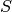

Glossary¶
- array-like
- Any data structure which can be converted into a
numpy.ndarrayby thenumpy.arrayconstructor. Includes allTensorbased classes. - convex conjugate
The convex conjugate (also called Fenchel conjugate) is an important tool in convex optimization. For a functional
 , the convex conjugate is the functional
, the convex conjugate is the functional- discretization
- Structure to handle the mapping between abstract objects (e.g. functions) and concrete, finite realizations.
It encompasses an abstract
Set, aTensoras finite data container and the mappings between them, sampling and interpolation. - domain
- Set of elements to which an operator can be applied.
- dtype
- Short for data type, indicates the way data is represented internally.
For example
float32means 32-bit floating point numbers. See numpy dtype for more details. - element
- Saying that
xis an element of a givenSetmy_setmeans thatx in my_setevaluates toTrue. The term is typically used as “element of <set>” or “<set>” element. When referring to aLinearSpacelike, e.g.,DiscreteLp, an element is of the corresponding typeLinearSpaceElement, i.e.DiscreteLpElementin the above example. Elements of a set can be created by theSet.elementmethod. - element-like
Any data structure which can be converted into an element of a
Setby theSet.elementmethod. For example, anrn(3) element-likeis any array-like object with 3 real entries.Example:
`DiscreteLp` element-likemeans thatDiscreteLp.elementcan create aDiscreteLpElementfrom the input.- in-place evaluation
- Operator evaluation method which uses an existing data container to store the result. Usually more efficient than out-of-place evaluation since no new memory is allocated and no data is copied.
- interpolation
- Operator in a discretization mapping a concrete
(finite-dimensional) object to an abstract (infinite-dimensional) one.
Example:
LinearInterpolation. - meshgrid
- Tuple of arrays defining a tensor grid by all possible combinations of entries, one from each
array. In 2 dimensions, for example, the arrays
[1, 2]and[-1, 0, 1]define the grid points(1, -1), (1, 0), (1, 1), (2, -1), (2, 0), (2, 1). - operator
- Mathematical notion for a mapping between arbitrary vector spaces. This includes the important special case of an operator taking a (discretized) function as an input and returning another function. For example, the Fourier Transform maps a function to its transformed version. Operators of this type are the most prominent use case in ODL. See the in-depth guide on operators for details on their implementation.
- order
- Ordering of the axes in a multi-dimensional array with linear (one-dimensional) storage.
For C ordering (
'C'), the last axis has smallest stride (varies fastest), and the first axis has largest stride (varies slowest). Fortran ordering ('F') is the exact opposite. - out-of-place evaluation
- Operator evaluation method which creates a new data container to store the result. Usually less efficient than in-place evaluation since new memory is allocated and data needs to be copied.
- proximal
Given a proper convex functional , the proximal operator is defined by

The term “proximal” is also occasionally used instead of ProxImaL, then refering to the proximal modelling language for the solution of convex optimization problems.
- proximal factory
- A proximal factory associated with a functional is a
callable, which returns the proximal of the scaled functional when called with a scalar .
This is used due to the fact that optimization methods often use for varying .
.
This is used due to the fact that optimization methods often use for varying . - range
- Set of elements to which an operator maps, i.e. in which the result of an operator evaluation lies.
- sampling
- Operator in a discretization mapping an abstract
(infinite-dimensional) object to a concrete (finite-dimensional) one.
Example:
PointCollocation. - vectorization
Ability of a function to be evaluated on a grid in a single call rather than looping over the grid points. Vectorized evaluation gives a huge performance boost compared to Python loops (at least if there is no JIT) since loops are implemented in optimized C code.
The vectorization concept in ODL differs slightly from the one in NumPy in that arguments have to be passed as a single tuple rather than a number of (positional) arguments. See numpy vectorization for more details.